前面简单介绍了把默认的页面登录改为前后端分离的接口异步登录的方法，可以帮我们实现基本的前后端分离登录功能。但是这种基本的登录和前面的页面登录还有一个一样的地方，就是使用session和cookie来维护登录状态，这种方法的问题在于，扩展性不好。单机当然没有问题，如果是服务器集群，或者是跨域的服务导向架构，就要求 session 数据共享，每台服务器都能够读取 session。
一种解决方案是 session 数据持久化，写入redis或别的持久层。各种服务收到请求后，都向持久层请求数据。这种方案的优点是架构清晰，缺点是工程量比较大。另外，持久层万一挂了，就会单点失败。
另一种方案是服务器索性不保存 session 数据了，所有数据都保存在客户端，每次请求都发回服务器。JWT 就是这种方案的一个代表。关于JWT的理论知识，建议参考 阮一峰 大神写的教程 ：JSON Web Token 入门教程，这是我认为可能是写的最清晰的一个，下面的jwt的实现也是根据此教程来实现。
具体的理论知识可以参考教程，这里简单说下流程，用户登录成功后，在header中返回用户一个token信息，这个信息里面包含了加密的用户信息和数字签名，最重要的还有过期时间，客户端接到后，每次访问接口header中都带着这个token，服务端验证成功后就表示处于登录状态，过期后再从新获取即可。
具体的token内容包含了头部（加密信息），载体（用户信息），签名（签名两个部分的前面）三大块，三大块之间用英文句号（也就是 "."）连接起来，组成一个完整的token信息
根据前面的理论知识，我们来设计一下如何使用jwt。首先我们使用jwt，就可以不再使用session和cookie，所以第一步就是：
然后考虑构建jwt消息体，有三个部分，第一个部分就是头部，内容是加密类型：
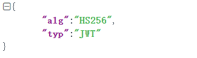
上面代码中，alg属性表示签名的算法（algorithm），默认是 HMAC SHA256（写成 HS256）；typ属性表示这个令牌（token）的类型（type），JWT 令牌统一写为JWT，最后，将上面的 JSON 对象使用 Base64URL 算法转成字符串，作为第一部分。所以第二步就是：
下一步确定第二部分，消息载体（Payload），这也是一个json对象，用来存放实际需要传递的数据。JWT 规定了7个官方字段，供选用：
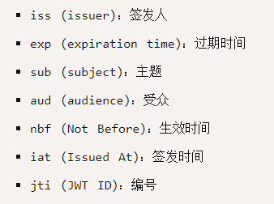
当然除了这些还可以加一些其它内容，比如用户信息，这个 JSON 对象也要使用 Base64URL 算法转成字符串，所以第三步和第四步就是：
现在token的消息基本组合完成了，用户登录成功和客户端访问接口，都要把token放在header里面，名字是 Authorization 。所以最后一步就是，客户端正常访问非登录等接口时，验证token的合法性，所以，总体设计流程如下：
上面的流程设计完了，下面我们按照流程修改项目，首先修改security配置类：
配置完后，启动项目，访问登录，登录成功后可以看到，没有任何cookie保存下来。
首先来定义几个常量：
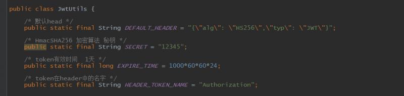
然后定义Base64URL 算法编码和解码方法：
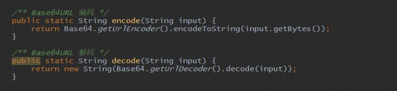
然后定义HmacSHA256 加密算法和获取签名的方法：
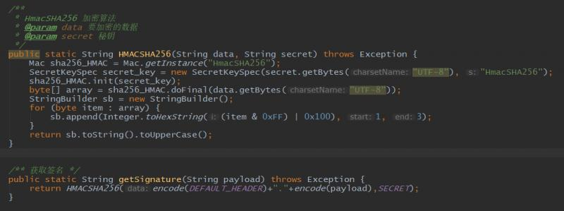
最后来设计一个简单验证token的方法：
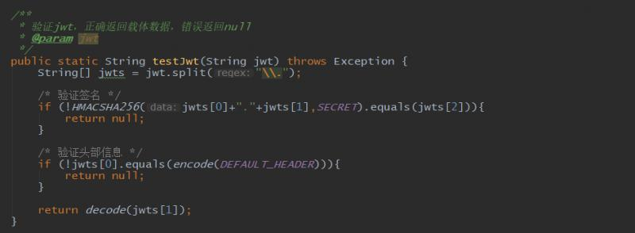
这样jwt工具类就设计好了，目前这几个方法足够操作token内容。
下面来定义jwt的内容，其实内容很简单，就三个部分，因此，定义三个字段即可：
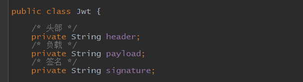
来看一下构造方法，
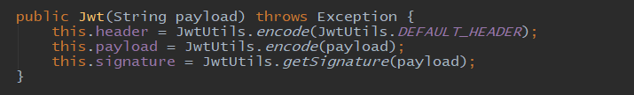
这个构造方法很便捷，使用它创建对象以后，jwt的三个部分基本都完成了，header部分和payload部分都编码了，签名也完成了，因此下面重写toString方法直接可以生成token：
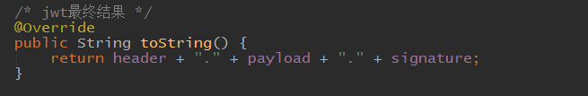
从这里可以看出，token整体默认是不加密，但也是可以加密的。生成原始 Token 以后，可以用密钥再加密一次。因此不要把密码等重要信息放入token。
用户登录成功后，不再把session发给用户，而是把jwt发送给用户，因此修改登录成功处理器如下：
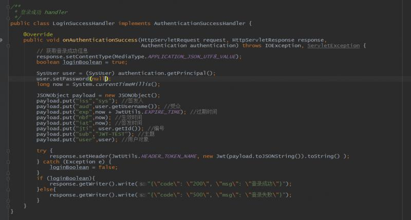
注意上面手动把用户的密码信息设置为null。这里为了方便，直接使用fastjson组合对象。
带着token访问接口的时候，需要把token转回登录用户对象，因此我们的用户实体类和token中带的字段名字一致，来修改一下，先看角色实体类：
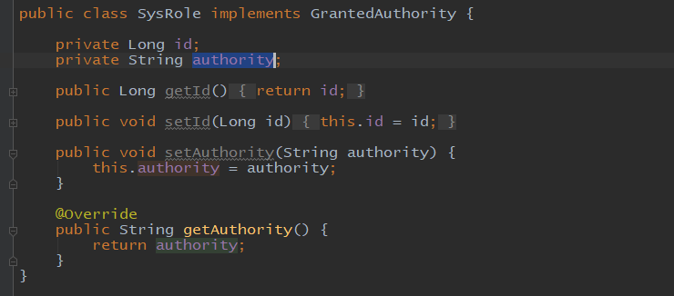
再看用户实体类：
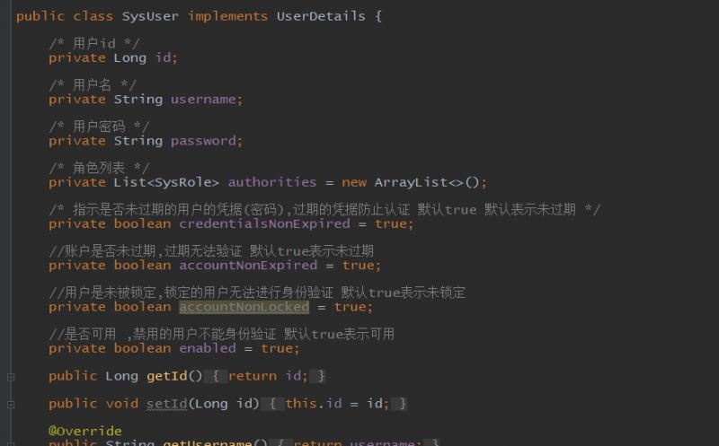
可以看到，基本的原则就是修改的名字和父类的必要字段名字一致就行，这也是建议的字段名字。
我们把security的session改为无状态后，虽然不再传递session，但是security的过滤器并没有失效，因此造成的效果就是登录成功后，访问接口显示未登录。现在我们使用token就要在登录前加一个验证token的过滤器，验证通过后直接把信息放到SecurityContextHolder中。这样每次登录靠验证token来判断是否登录，不再靠session。来看这个过滤器：
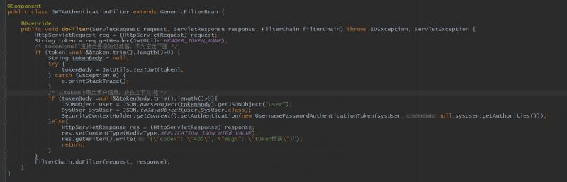
这个过滤器很简单，继承了 GenericFilterBean 类，直接获取token，判断token不为空，验证token，并从token的payload中取出用户信息，放入SecurityContextHolder中，验证失败或者token过期直接返回token错误。逻辑很简单。
最后在security类中，把这个过滤器配置到前面：
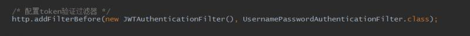
这样我们自定义的jwt流程就完成了。可以在postman中测试一下，首先是登录：
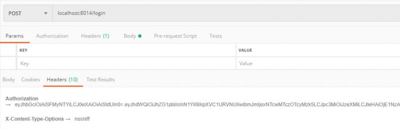
登录成功后，可以看到header中放着token的信息，然后使用token放入另一个接口的header中访问接口，可以看到访问成功：
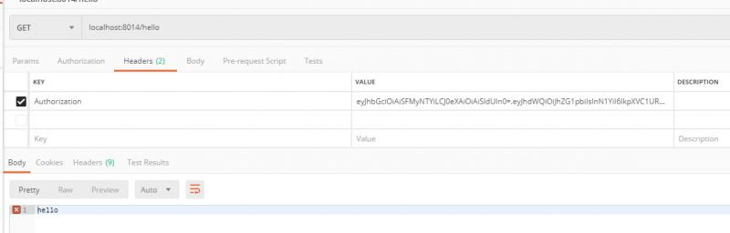
有兴趣的可以debug跟踪一下流程。
（1）JWT 默认是不加密，但也是可以加密的。生成原始 Token 以后，可以用密钥再加密一次。
（2）JWT 不加密的情况下，不能将秘密数据写入 JWT。
（3）JWT 不仅可以用于认证，也可以用于交换信息。有效使用 JWT，可以降低服务器查询数据库的次数。
（4）JWT 的最大缺点是，由于服务器不保存 session 状态，因此无法在使用过程中废止某个 token，或者更改 token 的权限。也就是说，一旦 JWT 签发了，在到期之前就会始终有效，除非服务器部署额外的逻辑。
（5）JWT 本身包含了认证信息，一旦泄露，任何人都可以获得该令牌的所有权限。为了减少盗用，JWT 的有效期应该设置得比较短。对于一些比较重要的权限，使用时应该再次对用户进行认证。
（6）为了减少盗用，JWT 不应该使用 HTTP 协议明码传输，要使用 HTTPS 协议传输。